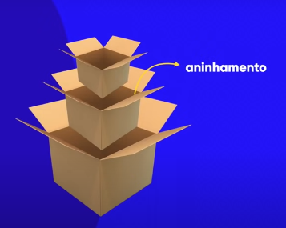
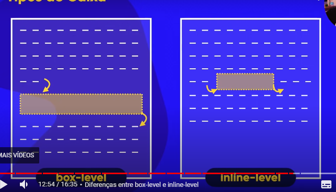

Modelos de Caixa
Os chamados box
Aninhamento
Caixas dentro de caixas
Como exemplo uma tag h1 tem sua altura (height) e sua largura (width).
Algumas definições extras:
- border - borda
- padding - preenchimento
- margin - margem/ espaçamento
- outline - contorno (fora do contorno)
Tipos de Box
Box-level e inline-level
Box-level
o Box será numa linha própria
inline-level
Na linha, é possível haver outras coisas na mesma linha
Exemplos de tags
box-level:
- div
- mais utilizado
- h1 - h6
- p
- main
- header
- nav
- article
- aside
- footer
- form
- video
inline-level:
- span
- a
- code
- small
- strong
- em
- sup - sub
- label
- button
- input
- select
Comprimento no CSS
Sentido Horário
A edição do tamanho de algumas propriedades no CSS é feita no sentido horário:
Como assim?
padding: 10px 15px 10px 20px;
Cada um é o comprimento em uma direção
1ª em cima - 2ª a direita - 3ª embaixo - 4ª a esquerda.
Pode se dizer que é cada valor girando no sentido horário.
Mesmo comprimento em todas as direções
Caso em todas as direções tenham o mesmo comprimento, pode utilizar apenas um valor.
margin: 10px;
Dois valores
padding: 10px 20px;
1ª em cima e baixo - 2ª direita e esquerda.
Algumas propriedades que funcionam
- padding
- margin
- border
- outline
Grouping Tags
Agrupando o código com as box semanticamente
Com elas ajuda na organização do código e leitura
Ao invês de utilizar a mesma box, como utilizar apenas div, se dá mais significado no código do site.
Como na divisão da estrutura do site:
- header - cabeçalho
- main - Conteúdo principal
- footer - rodapé
- nav - navegação no cabeçalho
- article - artigo
- section - seção
Sombras nas caixas
box-shadow: 4px 4px 2px 0px black;
Cuidado, não precisa exagerar
Coloque preta, e com transparência
1ª deslocamento horizontal - 2ª deslocamento vertical - 3ª blur - 4ª espalhamento - 5ª cor (rgb, rgba)
Bordas
Bordas Arredondadas
border-radius: 20px;
border-radius: 30px 15px 50px 5px;
- top-left
- top-right
- bottom-right
- bottom-left
Se for um quadrado é possível fazer uma bola
border-radius: 50%;
Bordas Decoradas
border-image
Vídeo do Guanabara sobre como usar Bordas decoradas